| 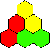 | 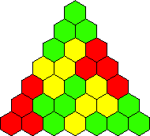 | 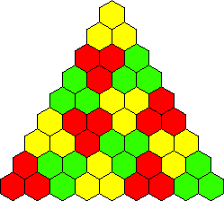 |
| 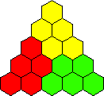 | 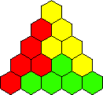 | 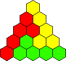 | 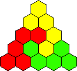 |
What other triangles do these polyhexes tile? What are the smallest triangle tilings of other polyhexes?
Berend Jan van der Zwaag also gave impossibility proofs for some small hexes, because of the way they must fit in a corner of any such triangle.
Andrew Clarke sent pictures of triangle tilings of pentahexes:
Brendan Owen found some great tilings. He found this tiling of a hexahex in a triangle of side 15:
and this tiling of a hexahex in a triangle of side 20:
and this tiling of a heptahex in a triangle of side 27:
Mike Reid found many other triangle tilings of some small tilings. His results are shown below. Berend Jan van der Zwaag and Andrew Clarke found some of these results as well.
| Shape | Sides of Triangluar Tilings |
|---|---|
| 0 and 3 (mod 4) | |
| 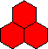 | 0, 2, 9, and 11 (mod 12) |
| 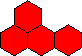 | 0 and 7 (mod 8) |
| 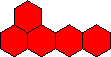 | 0 and 4 (mod 5) except 4 and 10 |
| 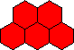 | 0 and 4 (mod 5) except 4 and 10 |
| 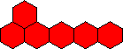 | 0, 3, 20, and 23 (mod 24) except 3 |
| 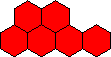 | 0, 3, 8, and 11 (mod 12) except 3, 8, 11, and 12 |
| 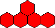 | 5, .... |
| 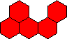 | 5, 15, 20, 24, 29, 30, ... |
| 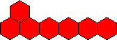 | 27, 28, .... |
| 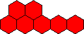 | 6, 21, 27, .... |
And although it's a little off the subject, Brendan Owen also found a non-trivial triangular tiling of a hexiamond:
If you can extend any of these results, please e-mail me. Click here to go back to Math Magic. Last updated 4/14/03.